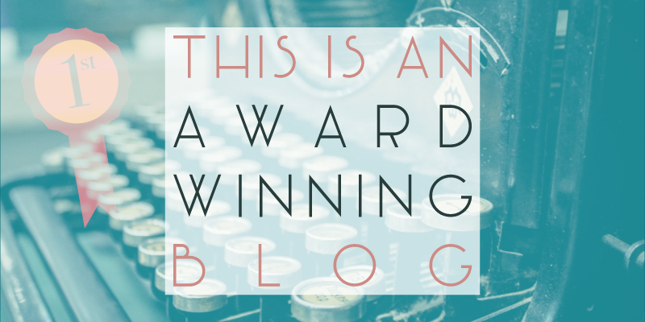

Very soon after receiving a rejection from my first developer job application my mood was lifted significantly, when I was informed that this little blog of mine had been selected by Makers Academy as the winner of their best blog competition!
Of course the kudos of being selected out of everybody in my cohort for the best blog award is a prize in itself, but the £250 cash prize will definitely help to keep the wolves from the doot until I manage to find some gainful employment again.
So there you have it, you’re now reading an award winning blog, haha.